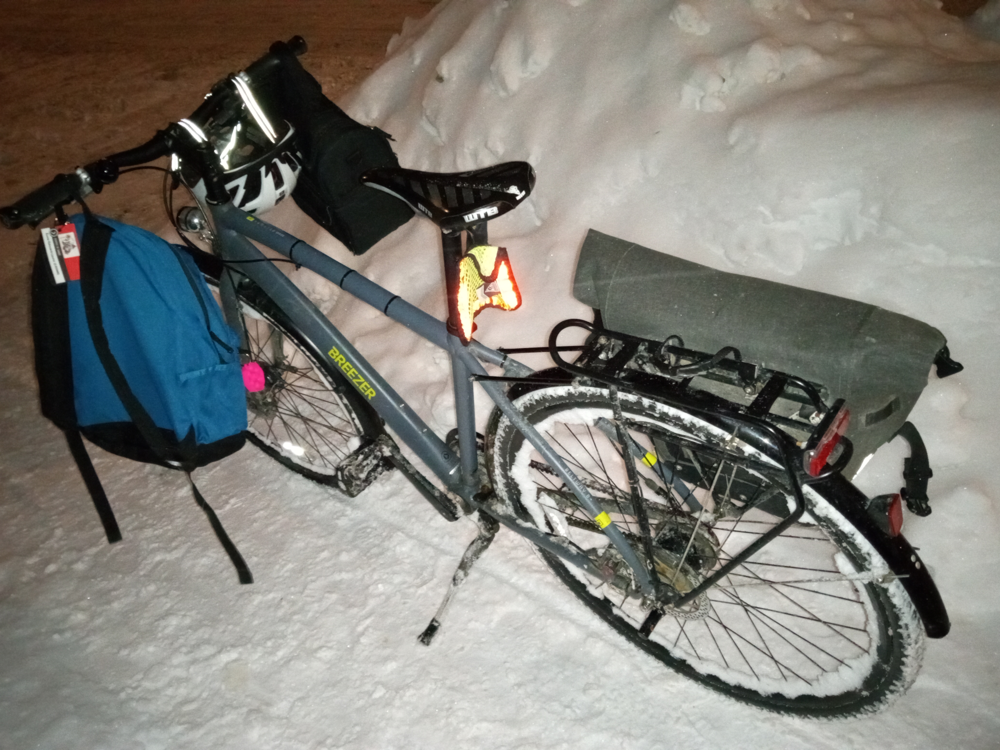

Cargo capacity is easy to be looked over when first starting biking. However, it makes a big difference in the possible ways the bicycle can be used, such as shopping around or simply to carry items for daily use. At first, many people will be tempted to use a backpack. This works but backpacks put strain on shoulders and generate sweat. Who likes to arrive at destination with a wet shirt?
It is important to invest in a good luggage rack and quality bags. My waterproof Arkel bags allow carrying a laptop, clothes, a cell phone, a chain, emergency tools and more, safely.
For daily trips to work, this is usually all the gear I need. It all fits in a single bag, which I find more convenient than two bags to carry around and it leaves one side of the bike free of obstacles. It might be a silly point, but I find that this makes it easier to hop on and off the bike without hitting the bag, as long as it is installed on the right side (which happens to be the right-hand side in my case).
I mainly use two bags when doing groceries or carrying stuff to the recycling center, such as empty bottles that have been piling up in the basement. For anything larger, I have a trailer which I got second-hand. I have used it to carry a microwave, cedars, skis and more. In all cases, I have always been impressed by how easy it was to pull these items. The most challenging part is finding quiet routes as I feel less confident in the traffic with a trailer.
We are a family of five. Anyone who tells you they "need" an SUV to carry their goods around is delusional.
When picking up our children from their school which is a few blocks from home, I'll often arrive from work on my bike and then walk it with the children, using it as a mule on which I will hook their backpacks and lunchboxes, fitting other smaller items in my pannier bags.
When the kids were smaller we were using a Thule chariot to carry them to and from daycare. The chariot was super convenient and could also be converted on the fly into a stroller. This was a useful feature as I could hitch them in the morning and my wife was walking them back home in the evening.